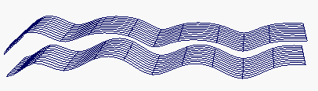

创建从原始曲线或曲面偏移的曲线或曲面的副本（副本上的每个点与原始曲线或曲面上的相应点之间都存在某个特定的距离）。
创建曲线的偏移副本
- 执行下列操作之一：
- 选择曲线或等参线，然后选择“曲线 > 偏移 > 偏移曲线”(Curves > Offset > Offset Curve)。
- 选择曲面上的曲线，然后选择“曲线 > 偏移 > 偏移曲面上的曲线”(Curves > Offset > Offset Curve On Surface)。
- 会在默认偏移距离 (1.0) 处创建一条偏移曲线。
- 在工具箱中，单击“显示操纵器工具”(Show Manipulator tool)，然后使用操纵器更改偏移距离。
创建曲面的偏移副本
- 选择曲面。
- 选择“曲面 > 偏移”(Surfaces > Offset) >
 。
。 - 执行下列操作之一：
- 若要保持曲面曲率，请将“方法”(Method)设定为“曲面拟合”(Surface Fit)。
- 若要保持 CV 布局，请将“方法”(Method)设定为“CV 拟合”(CV Fit)。
- 输入要偏移的距离。在偏移之后，可以在通道盒或属性编辑器中以交互方式更改该距离。
- 单击“偏移”(Offset)。 